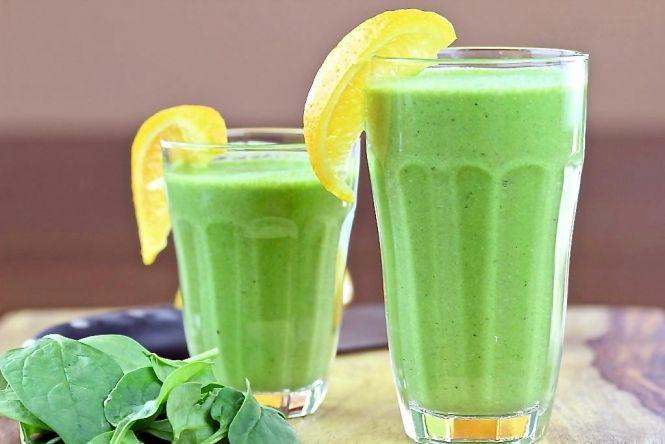
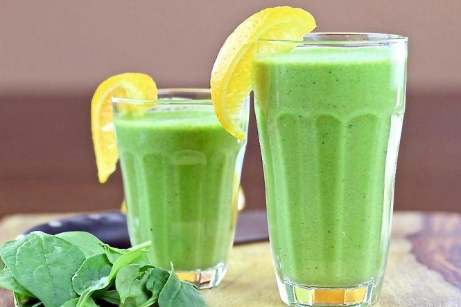

Блог
Ласкаво просимо на наш кулінарний блог! Тут ви знайдете різноманітні рецепти, корисні поради та натхнення для приготування смачних страв на будь-який смак. Незалежно від того, чи ви новачок на кухні або досвідчений кухар, у нас знайдеться щось цікаве для кожного.
Наша Історія
Наш блог був створений групою ентузіастів, які захоплено ставляться до кулінарії. Наша місія – ділитися улюбленими рецептами та допомагати вам відкривати нові гастрономічні горизонти. Кожна страва, яку ми пропонуємо, була ретельно випробувана та вдосконалена.
Популярні Рецепти
На нашому блозі ви знайдете рецепти на будь-який смак і випадок: від швидких та легких страв для буднів до вишуканих святкових меню. Ми ділимося секретами приготування традиційних українських страв, а також міжнародними рецептами.
Літні Рецепти
Літо – це час свіжих овочів, фруктів та легких страв. Ось декілька наших улюблених літніх рецептів, які допоможуть вам насолоджуватися цією порою року:
Салат із кавуном та фетою
Цей освіжаючий салат ідеально підходить для спекотних літніх днів. Вам знадобляться:
- Кавун – 500 г
- Сир фета – 200 г
- Оливкова олія – 2 ст. л.
- Лимонний сік – 1 ст. л.
- Свіжа м'ята – за смаком
- Сіль та перець – за смаком
Наріжте кавун та сир фета кубиками, змішайте з оливковою олією, лимонним соком, додайте м'яту, сіль та перець. Подавайте охолодженим.
Крижані фруктові смузі
Цей смузі стане улюбленим напоєм для всієї родини. Вам знадобляться:
- Полуниця – 200 г
- Банан – 1 шт.
- Апельсиновий сік – 200 мл
- Лід – 1 склянка
- Мед – за смаком
Змішайте всі інгредієнти в блендері до однорідної маси. Подавайте одразу після приготування.
Гаспачо
Цей іспанський холодний суп стане чудовим перекусом у спеку. Вам знадобляться:
- Помідори – 1 кг
- Огірки – 2 шт.
- Солодкий перець – 1 шт.
- Часник – 2 зубчики
- Оливкова олія – 50 мл
- Винний оцет – 2 ст. л.
- Сіль та перець – за смаком
Наріжте всі овочі та змішайте їх у блендері до однорідної консистенції. Додайте оливкову олію, оцет, сіль та перець. Подавайте охолодженим.
Фотографії
 
